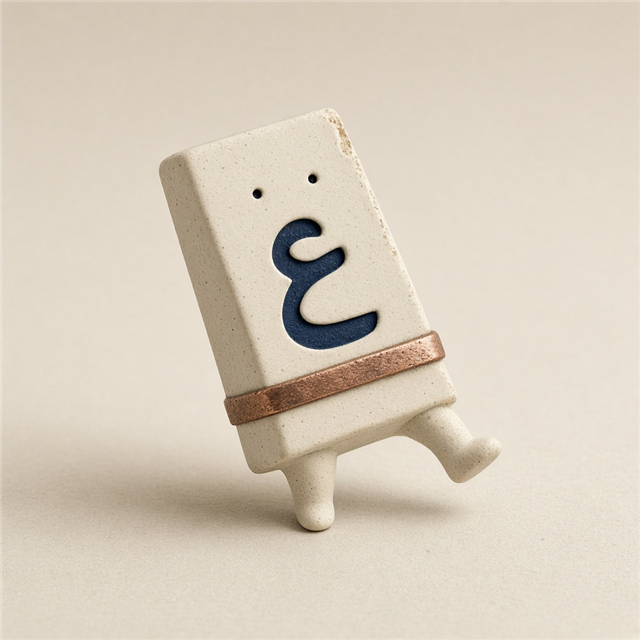

;dt phg;
ليك ولصحابك، مش متجر
الحروف فلتت منك؟
كتبت وإنت ناسي تغيّر اللغة. الصق اللي طلع، فلتة ترجّعه لتخطيط الكيبورد — عربي أو إنجليزي — من غير ما تكتب من الأول.

يشتغل على جهازك فقط
من غير نت ومن غير حساب
ليك وللي تبعتلهم الملف
مش ترجمة. الحرف راجع لمفتاحه.
كيف حالك
لو الكيبورد كان إنجليزي وإنت ناوي عربي، كل حرف يتقلب لمقابله على لوحة عربي ١٠١. والعكس. الأرقام تفضل أرقام.
01
اختصار في أي صفحة
علّم النص واضغط Ctrl+Shift+X. على الماك Command+Shift+X. تقدر تغيّره من الإعدادات.
Ctrl Shift X
02
زر صغير جنب التحديد
يظهر لما تعلّم كلام، ويقف جنب إيدك. لو مضايقك، اقفله من الإعدادات.
03
لوحتين، مش تخمين صامت
عربي ١٠١ لويندوز ولينكس و«Arabic - PC» على الماك. عربي الماك الأصلي اختيار ظاهر، لأن الصف السفلي مختلف: z عندهم ظ مش ئ.
z → ئ / ظ
04
النص ما بيسافرش
مفيش سيرفر ومفيش إحصائيات بتتبعت. العداد المحلي جوا المتصفح بس، لو حابب تشوف قلبت كام مرة.
٠ طلبات شبكة
مواقف، مش آراء ناس
دي أمثلة استخدام، مش شهادات. مفيش أسماء متألفة.
رسالة لصاحبك اتكتبت والكيبورد إنجليزي.
;dt phg;كيف حالك
تعليق في الكود طلع حروف لاتيني وأنت كنت فاكره عربي.
hgsghlالسلام
على الماك بلوحة Arabic الأصلية، z مش نفس z بتاعة ويندوز.
zظ على الماك، ئ على ١٠١
ببلاش. ليك ولصحابك.
ثبّتها مرة، على أي نظام
نفس مجلد extension على ويندوز ولينكس والماك. الفرق بس صفحة الإضافات في المتصفح.
- كروم، إيدج، بريف، أوبرا، فيفالدي: افتح صفحة الإضافات، فعّل وضع المطوّر، Load unpacked، واختار مجلد extension.
- فايرفوكس: about:debugging ثم This Firefox ثم Load Temporary Add-on واختار manifest.json. الإضافة المؤقتة بتتشال لما المتصفح يقفل.
- سفاري: الإضافة مش بتركّب من غير أدوات أبل. افتح الصفحة دي، أو اسحب زر الإشارة لتحت.
لو الإشارة مش جاهزة، الصفحة دي نفسها أداة كاملة من غير تثبيت.
قبل ما تسأل صاحبك
النص بيطلع بره الجهاز؟
لأ. التحويل يحصل عندك. مفيش صلاحية شبكة في الإضافة، والنص مش بيتخزن — بس عدد المرات لو ساببها مفتوحة.
تشتغل على كروم وفايرفوكس؟
أيوه، وعلى المتصفحات المبنية على كروميوم. فايرفوكس بيحمّلها كإضافة مؤقتة لحد ما تقفل المتصفح. الصفحة دي وزر الإشارة يفضلوا شغالين.
وسغاري؟
سفاري مش بيقبل الإضافة دي من المجلد. استخدم الصفحة أو زر الإشارة. نفس الكلام على أي متصفح قافل الإضافات.
أنهي لوحة أختار؟
لو بتكتب عربي زي ويندوز، أو على الماك اخترت Arabic - PC، سيّب عربي ١٠١. لو على الماك اخترت Arabic من غير PC، حوّل لعربي الماك. الصف السفلي هو اللي بيتغير.
«لا» طلعت b أو gh؟
على عربي ١٠١ في مفتاح واحد بيكتب لا، وهو b. ولو كتبت لام وبعدين ألف يبقى gh. فلتة تبدأ بالمفتاح الواحد، وتسيب زر «البديل» لو عايز التانية. من غير ما تقف قدام نافذة.